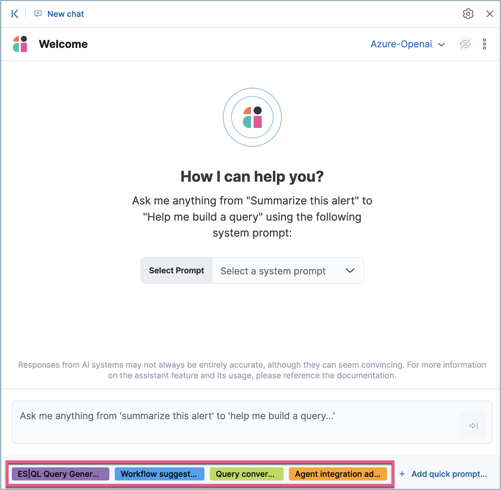

Elastic AI Assistant
editElastic AI Assistant
editThe Elastic AI Assistant utilizes generative AI to bolster your cybersecurity operations team. It allows users to interact with Elastic Security for tasks such as alert investigation, incident response, and query generation or conversion using natural language and much more.
Elastic AI Assistant is designed to enhance your analysis with smart dialogues. Its capabilities are still developing. Users should exercise caution as the quality of its responses might vary. Your insights and feedback will help us improve this feature. Always cross-verify AI-generated advice for accuracy.
Requirements
- This feature requires the Security Analytics Complete project feature.
- You need a generative AI connector, which AI Assistant uses to generate responses.
Your data and AI Assistant
editElastic does not store or examine prompts or results used by AI Assistant, or use this data for model training. This includes anything you send the model, such as alert or event data, detection rule configurations, queries, and prompts. However, any data you provide to AI Assistant will be processed by the third-party large language model (LLM) provider you connected as part of AI Assistant setup.
Elastic does not control third-party tools, and assumes no responsibility or liability for their content, operation, or use, nor for any loss or damage that may arise from your using such tools. Please exercise caution when using AI tools with personal, sensitive, or confidential information. Any data you submit may be used by the provider for AI training or other purposes. There is no guarantee that the provider will keep any information you provide secure or confidential. You should familiarize yourself with the privacy practices and terms of use of any generative AI tools prior to use.
Elastic can automatically anonymize event data that you provide to AI Assistant as context. To learn more, refer to Configure AI Assistant.
Set up AI Assistant
editYou must create a generative AI connector before you can use AI Assistant. AI Assistant can connect to multiple large language model (LLM) providers so you can select the best model for your needs. To set up a connector, refer to LLM connector setup guides.
Recommended models
While AI Assistant is compatible with many different models, refer to the LLM performance matrix to select models that perform well with your desired use cases.
Start chatting
editTo open AI Assistant, select the AI Assistant button in the top toolbar from anywhere in the Elastic Security app. You can also use the keyboard shortcut Cmd + ; (or Ctrl + ; on Windows).
This opens the Welcome chat interface, where you can ask general questions about Elastic Security.
You can also chat with AI Assistant from several particular pages in Elastic Security where you can easily send context-specific data and prompts to AI Assistant.
- Alert details or Event details flyout: Click Chat while viewing the details of an alert or event.
- Rules page: Use AI Assistant to help create or correct rule queries.
- Data Quality dashboard: Select the Incompatible fields tab, then click Chat. (This is only available for fields marked red, indicating they’re incompatible).
- Timeline: Select the Security Assistant tab.
Each user’s chat history (up to the 99 most recent conversations) and custom Quick Prompts are automatically saved, so you can leave Elastic Security and return to a conversation later. Chat history appears to the left of the AI Assistant chat window, and on the Conversations tab of the AI Assistant settings menu. To access the settings menu, use the global search field to search for "AI Assistant for Security".
Interact with AI Assistant
editUse these features to adjust and act on your conversations with AI Assistant:
- (Optional) Select a System Prompt at the beginning of a conversation by using the Select Prompt menu. System Prompts provide context to the model, informing its response. To create a System Prompt, open the System Prompts dropdown menu and click + Add new System Prompt….
-
(Optional) Select a Quick Prompt at the bottom of the chat window to get help writing a prompt for a specific purpose, such as summarizing an alert or converting a query from a legacy SIEM to Elastic Security.
 -
System Prompts and Quick Prompts can also be configured from the corresponding tabs on the Security AI settings page.

- Quick Prompt availability varies based on context—for example, the Alert summarization Quick Prompt appears when you open AI Assistant while viewing an alert. To customize existing Quick Prompts and create new ones, click Add Quick Prompt.
-
In an active conversation, you can use the inline actions that appear on messages to incorporate AI Assistant’s responses into your workflows:
-
Add note to timeline (
 ): Add the selected text to your currently active Timeline as a note.
): Add the selected text to your currently active Timeline as a note.
- Add to existing case (): Add a comment to an existing case using the selected text.
-
Copy to clipboard (
 ): Copy the text to clipboard to paste elsewhere. Also helpful for resubmitting a previous prompt.
): Copy the text to clipboard to paste elsewhere. Also helpful for resubmitting a previous prompt.
-
Add to timeline (
 ): Add a filter or query to Timeline using the text. This button appears for particular queries in AI Assistant’s responses.
): Add a filter or query to Timeline using the text. This button appears for particular queries in AI Assistant’s responses.Be sure to specify which language you’d like AI Assistant to use when writing a query. For example: "Can you generate an Event Query Language query to find four failed logins followed by a successful login?"
-
Add note to timeline (
AI Assistant can remember particular information you tell it to remember. For example, you could tell it: "When anwering any question about srv-win-s1-rsa or an alert that references it, mention that this host is in the New York data center". This will cause it to remember the detail you highlighted.
Configure AI Assistant
editThe Security AI settings page allows you to configure AI Assistant. To access it, use the global search field to search for "AI Assistant for Security".
It has the following tabs:
- Conversations: When you open AI Assistant from certain pages, such as Timeline or Alerts, it defaults to the relevant conversation type. For each conversation type, choose the default System Prompt, the default connector, and the default model (if applicable). The Streaming setting controls whether AI Assistant’s responses appear word-by-word (streamed), or as a complete block of text. Streaming is currently only available for OpenAI models.
- Connectors: Manage all LLM connectors.
- System Prompts: Edit existing System Prompts or create new ones. To create a new System Prompt, type a unique name in the Name field, then press enter. Under Prompt, enter or update the System Prompt’s text. Under Contexts, select where the System Prompt should appear.
- Quick Prompts: Modify existing Quick Prompts or create new ones. To create a new Quick Prompt, type a unique name in the Name field, then press enter. Under Prompt, enter or update the Quick Prompt’s text.
- Anonymization: Select fields to include as plaintext, to obfuscate, and to not send when you provide events to AI Assistant as context. Learn more.
- Knowledge Base: Provide additional context to AI Assistant. Learn more.
Anonymization
editThe Anonymization tab of the Security AI settings menu allows you to define default data anonymization behavior for events you send to AI Assistant. Fields with Allowed toggled on are included in events provided to AI Assistant. Allowed fields with Anonymized set to Yes are included, but with their values obfuscated.
You can access anonymization settings directly from the Attack Discovery page by clicking the settings ( ) button next to the model selection dropdown menu.
) button next to the model selection dropdown menu.
The Show anonymized toggle controls whether you see the obfuscated or plaintext versions of the fields you sent to AI Assistant. It doesn’t control what gets obfuscated — that’s determined by the anonymization settings. It also doesn’t affect how event fields appear before being sent to AI Assistant. Instead, it controls how fields that were already sent and obfuscated appear to you.
When you include a particular event as context, such as an alert from the Alerts page, you can adjust anonymization behavior for the specific event. Be sure the anonymization behavior meets your specifications before sending a message with the event attached.
Knowlege base
editThis functionality is in beta and is subject to change. The design and code is less mature than official GA features and is being provided as-is with no warranties. Beta features are not subject to the support SLA of official GA features.
The Knowledge Base tab of the Security AI settings page allows you to enable AI Assistant to remember specified information, and use it as context to improve response quality. To learn more, refer to AI Assistant Knowledge Base.
Get the most from your queries
editElastic AI Assistant allows you to take full advantage of the Elastic Security platform to improve your security operations. It can help you write an ES|QL query for a particular use case, or answer general questions about how to use the platform. Its ability to assist you depends on the specificity and detail of your questions. The more context and detail you provide, the more tailored and useful its responses will be.
To maximize its usefulness, consider using more detailed prompts or asking for additional information. For instance, after asking for an ES|QL query example, you could ask a follow-up question like, “Could you give me some other examples?” You can also ask for clarification or further exposition, for example "Please provide comments explaining the query you just gave."
In addition to practical advice, AI Assistant can offer conceptual advice, tips, and best practices for enhancing your security measures. You can ask it, for example:
- “How do I set up a machine learning job in Elastic Security to detect anomalies in network traffic volume over time?”
- “I need to monitor for unusual file creation patterns that could indicate ransomware activity. How would I construct this query using EQL?”